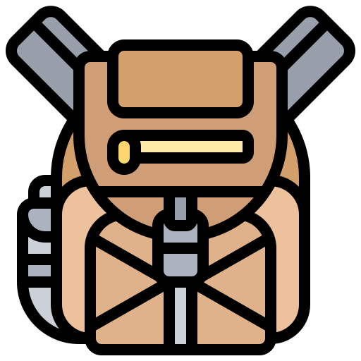

Survival Kit
First we shape our tools, thereafter our tools shape us.

 Useful preliminary considerations
In the following sections, a "personal survival kit" is not considered to be an additional/separated pack, but rather a list
comprising all the most essential survival gear one should carry on a wilderness expeditions.
The alternatives are usually two: buy a prefabricated kit (you can find plenty on the internet) or make your own.
The second option will most likely require more time, investigation, and background knowledge, but it's also usually
preferred by experts. The reasons are many:

The first item in your personal survival kit should always be a belt knife. The knife represents a kit within your kit. It has an incredibly large variety of uses (splitting wood, twisting and prying objects, shape components for traps and shelters, etc.) Keep your knife sharp! You can carry around a sharpening stone too, or you might be able to find one. Any fairly smooth stone will work.
 The essentials
The essentials
What follows is a brief list of items that you should always include in your personal survival kit. They represent the pillars of your survival equipment. Try to find some smart ways to keep them well organized.


Powered by J. G.